Quality healthcare at an affordable cost, with emphasis on the poor and marginalized, patient-centred care, safety, dignity and ethical medical practice.
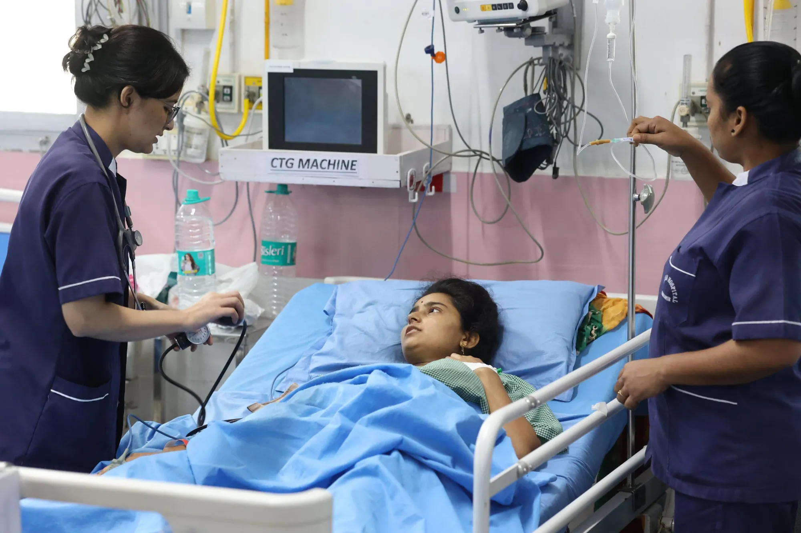
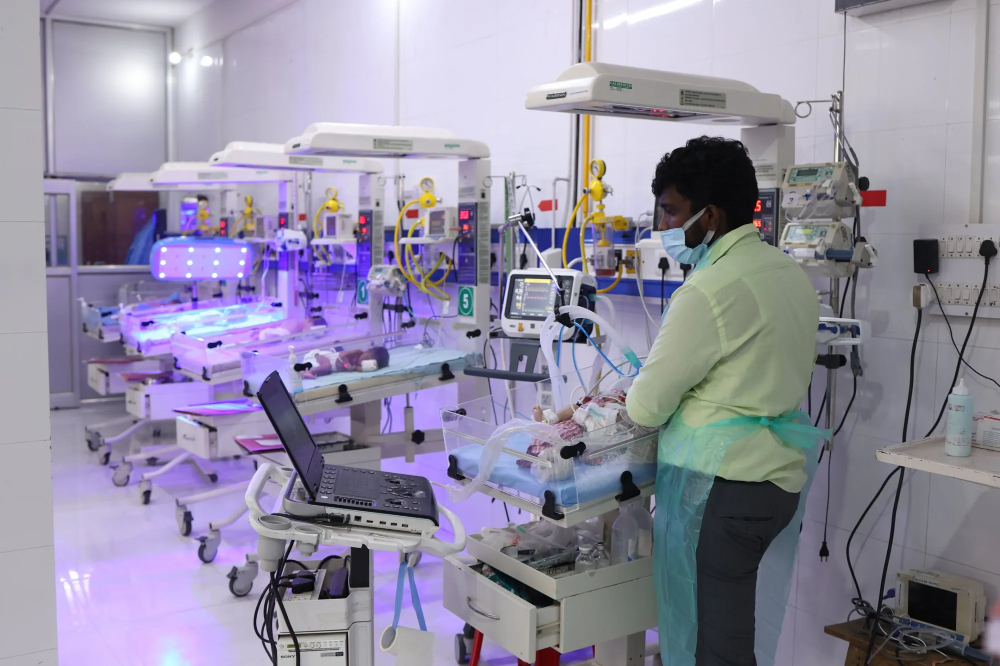
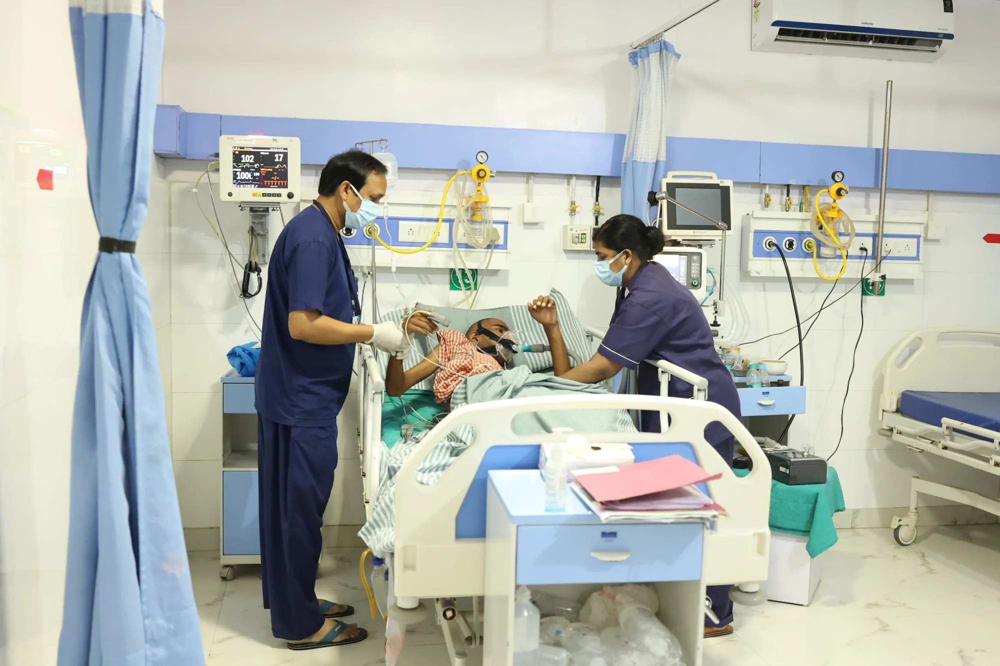
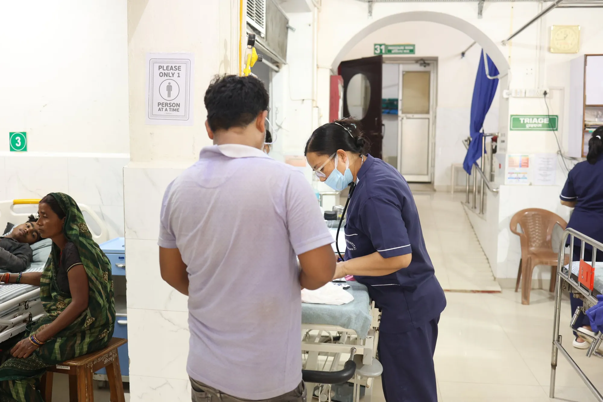
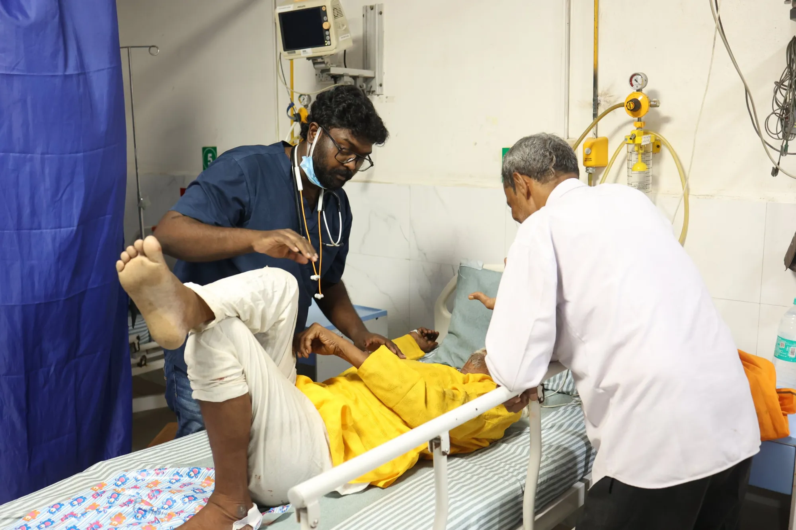
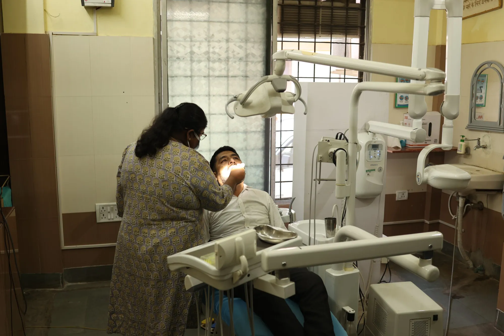
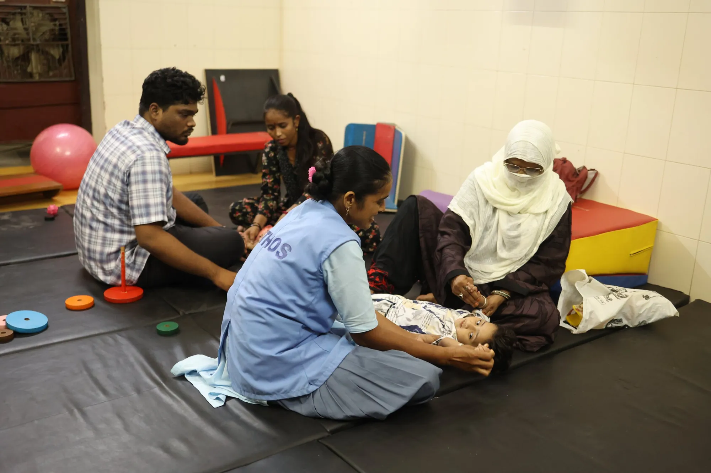
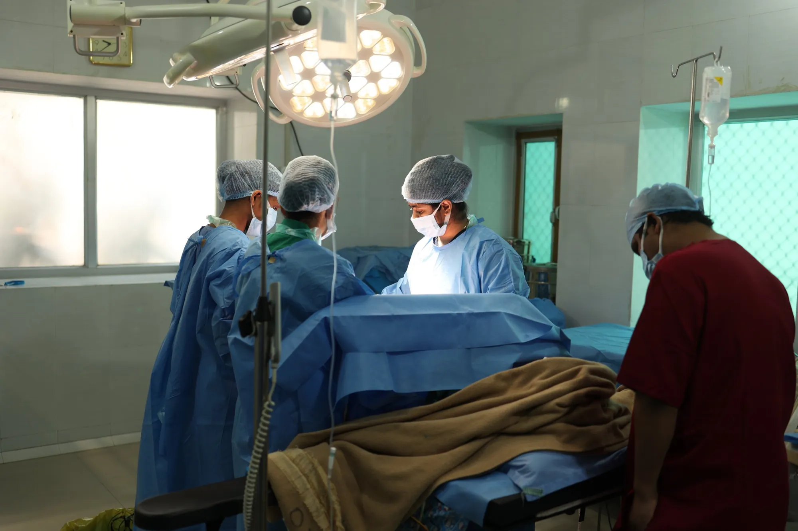
Two more departments of the hospital reach into the community and train the next generation of nurses.
Available day and night, every day of the week.
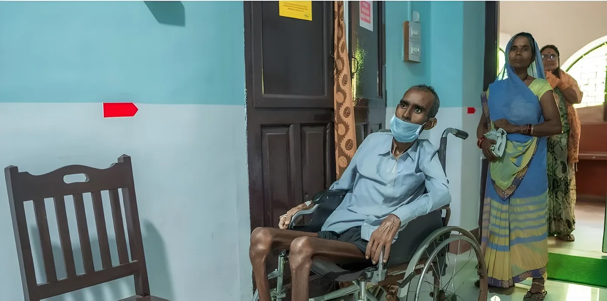
Palliative nursing care, counselling and mental health support, with palliative care services being developed further during 2025–26.
The hospital continues to work towards maintaining quality standards through systematic processes related to infection prevention and control, biomedical waste management, patient safety, documentation and continuous quality improvement.
The hospital has introduced and strengthened digital systems for attendance, maintenance requests, asset management and other administrative processes to improve operational efficiency and accountability.
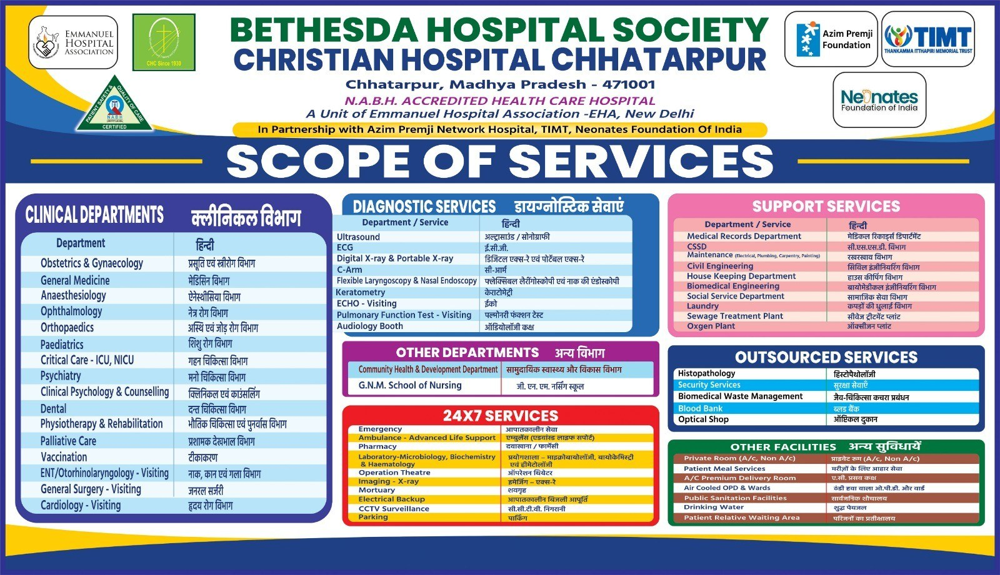
Scope of servicesAll departments and services in English and Hindi · open the full poster ↗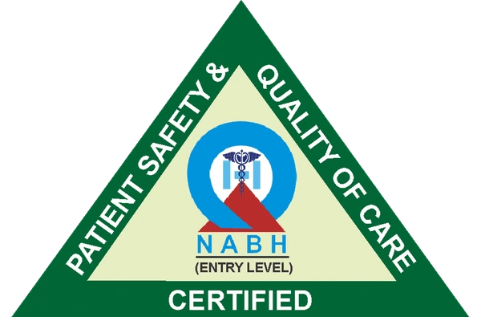
NABH Entry Level Certified for patient safety and quality of care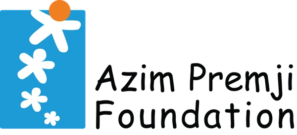
Azim Premji Network Hospital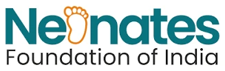
Neonates Foundation of India